DraftCP — Manuale Utente
Il plugin AutoCAD per la restituzione grafica di rilievi da nuvola di punti
versione 1.0 · sviluppato da O.C.G. · Luglio 2026Inizia da qui → Vai ai comandi

Il pannello di controllo principale di DraftCP con tutte le viste di un progetto reale
Requisiti di sistema
Introduzione a DraftCP
DraftCP è un plugin per AutoCAD che automatizza e guida l'operatore in tutte le fasi della restituzione grafica di un rilievo da nuvola di punti, dalla definizione dell'orientamento del progetto fino all'esportazione del file DWG finale.
Cos'è DraftCP e a cosa serve
Il rilievo da nuvola di punti è oggi la tecnica di acquisizione geometrica più diffusa nel settore dell'architettura e dell'ingegneria. Una nuvola di punti però non è un disegno: per ottenere elaborati tecnici consegnabili (piante, sezioni, prospetti) occorre un lungo lavoro manuale di restituzione grafica in AutoCAD.
DraftCP nasce per eliminare le operazioni più ripetitive e soggette ad errore di questo processo: definire l'orientamento del sistema di riferimento, creare e gestire i layer per ogni vista, tracciare i muri con la correzione geometrica automatica, inserire porte e finestre, e infine impaginare ed esportare tutti gli elaborati in un unico file DWG pulito.
A chi è rivolta
- Geometri e tecnici che eseguono rilievi architettonici di edifici esistenti
- Architetti e ingegneri che ricevono nuvole di punti e devono produrre elaborati tecnici
- Disegnatori CAD che lavorano quotidianamente con AutoCAD su progetti di rilievo
- Studi professionali con nuvole di punti da Leica CloudWorx, Autodesk ReCap o software analoghi
Flusso di lavoro
Installazione
L'installazione di DraftCP è completamente automatizzata tramite il file di installazione
fornito (.exe).
- Chiudere AutoCAD se è attualmente in esecuzione.
- Avviare l'eseguibile
DraftCP_Setup_v1.0.0.exee seguire le istruzioni guidate dell'installer. - Avviare AutoCAD: l'applicazione, la barra dei comandi personalizzata (Ribbon) e tutti i percorsi di supporto saranno configurati e caricati in modo del tutto automatico.
APPLOAD. Il plug-in è
pronto all'uso fin da subito.
Attivazione della licenza
Al primo avvio, l'applicazione calcola il Codice Macchina del PC: un identificativo univoco e irreversibile derivato dall'UUID della scheda madre. Se il software non è attivato, appare la finestra di attivazione:
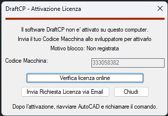
La finestra di attivazione con il Codice Macchina univoco del PC
Come attivare la licenza
- Annotare il Codice Macchina visualizzato nella finestra.
- Cliccare "Invia Richiesta Licenza via Email": si apre il client di posta precompilato con il Codice Macchina già incluso nel testo.
- Inviare l'email allo sviluppatore. L'attivazione verrà effettuata entro breve.
- Dopo l'attivazione, riavviare AutoCAD e richiamare nuovamente il comando.
Lo stato della licenza nella Dashboard
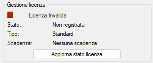
Il riquadro "Gestione licenza" con lo stato attuale della licenza
| Colore | Stato | Significato |
|---|---|---|
| 🟢 Verde | Licenza Attiva | Licenza verificata e valida. |
| 🟡 Giallo | Grazia Offline | Nessuna connessione da meno di 5 giorni. L'app funziona normalmente. |
| 🔴 Rosso | Non Valida | Licenza assente, scaduta o non registrata. |
Video tutorial: attivazione licenza
Tutorial: come richiedere e attivare la licenza di DraftCP
La scheda DraftCP nel Ribbon di AutoCAD
Dopo l'installazione del pacchetto, nella barra degli strumenti superiore di AutoCAD (Ribbon) compare la scheda DraftCP. Da qui è possibile lanciare tutti i comandi del plugin con un semplice click sull'icona corrispondente.
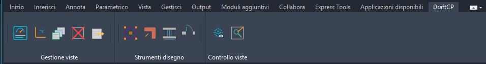
La scheda DraftCP nel Ribbon di AutoCAD.
I comandi disponibili
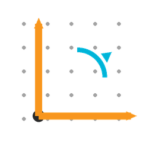
CPS — Orientamento Progetto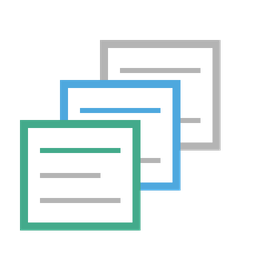
CPV — Crea Viste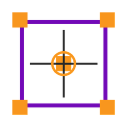
CPB — Copia Blocchi Vista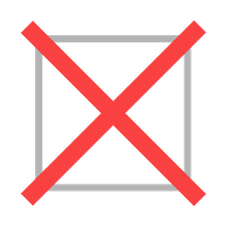
DELV — Elimina Vista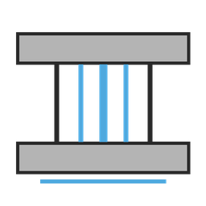
CPF — Inserimento Finestre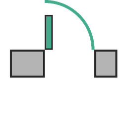
CPP — Inserimento Porte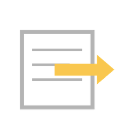
CPE — Esportazione VisteLa Dashboard CPD
La Dashboard è il pannello di controllo centrale di DraftCP. Da qui è possibile accedere a tutti i comandi dell'applicazione, monitorare lo stato delle viste e gestire la licenza senza mai abbandonare l'interfaccia grafica.
Come aprire la Dashboard
Digitare CPD nella riga di comando di AutoCAD e premere Invio. La Dashboard si apre sopra la finestra del CAD e rimane in primo piano.
Panoramica del pannello

La Dashboard con un progetto reale caricato: 11 viste attive, licenza verde e tutti i comandi disponibili
La Dashboard è organizzata su due colonne:
- Colonna sinistra: i pulsanti dei comandi, raggruppati per area funzionale
- Colonna destra: le informazioni di stato (viste, supporto, licenza)
Colonna sinistra — Comandi
Gestione disegno e Viste
| Pulsante | Alias | Funzione |
|---|---|---|
| Orientamento | CPS | Imposta l'orientamento base del disegno e prepara l'ambiente di lavoro |
| Generazione Viste | CPV | Crea piante, sezioni e prospetti con layer e filtri associati |
| Blocchi di Controllo | CPB | Copia una vista su un'altra come blocco di riferimento grafico |
| Attiva la vista | AC | Rende corrente una vista e attiva il suo filtro layer |
| Eliminazione Viste | DELV | Rimuove in modo sicuro una vista e tutti i suoi layer |
Strumenti per il disegno
| Pulsante | Alias | Funzione |
|---|---|---|
| Tracciamento Muri | CPM | Disegna muri a due linee con correzione geometrica automatica |
| Inserimento Porte | CPP | Posiziona porte e varchi nei muri tracciati |
| Inserimento Finestre | CPF | Posiziona finestre nei muri tracciati con profilo davanzale |
| Visibilità Nuvola | B | Accende o spegne rapidamente la nuvola di punti |
Esportazione
Il pulsante ESPORTAZIONE FINALE (CPE) in fondo alla colonna sinistra estrae tutte le viste dal disegno e le impagina in un nuovo DWG pronto alla consegna.
Colonna destra — Stato e Supporto
Box "Stato Viste"
Elenca tutte le viste presenti nel disegno con un indicatore di stato accanto a ciascuna:
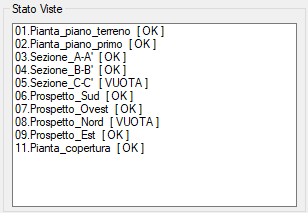
L'elenco delle viste: [ OK ] per quelle con geometria, [ VUOTA ] per quelle ancora vuote
- [ OK ] — la vista contiene almeno un oggetto grafico nei suoi layer di disegno
- [ VUOTA ] — la vista esiste ma non contiene ancora disegno
Questo permette di verificare a colpo d'occhio lo stato di avanzamento del rilievo senza navigare tra le viste una ad una.
Box "Supporto"
Quattro pulsanti di accesso diretto alla documentazione:
- Manuale — apre questo documento nel browser predefinito
- Segnalazione Bug — apre il client di posta con email precompilata allo sviluppatore, con il Codice Macchina già incluso nel testo
- Licenza d'uso — apre il contratto EULA nel browser
- Privacy Policy — apre l'informativa sulla privacy nel browser
Box "Gestione Licenza"
Mostra sempre lo stato aggiornato della licenza con un indicatore colorato:
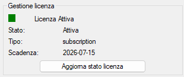
Licenza Attiva — tutto OK
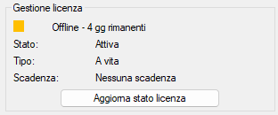
Grazia Offline — funziona ancora
Il pulsante "Aggiorna stato licenza" esegue immediatamente una verifica online, aggiornando l'indicatore senza necessità di riavviare AutoCAD.
Orientamento del Progetto CPS
Prima di iniziare il disegno, è fondamentale allineare il sistema di riferimento di AutoCAD
con la geometria principale dell'edificio. Questo comando crea l'UCS 01.Pianta
su cui si basano tutti i comandi successivi.
A cosa serve
Il sistema UCS (User Coordinate System) di AutoCAD definisce l'orientamento degli assi X e Y nel disegno. Per un rilievo architettonico, è essenziale che l'asse X sia parallelo ad un elemento dell'edificio (tipicamente la facciata più lunga o quella esposta a Sud).
Il comando CPS imposta questo allineamento, crea l'UCS
01.Pianta e lo salva nel disegno in modo permanente. Tutti i comandi di
DraftCP — dalla creazione delle viste al tracciamento dei muri — lavorano
con riferimento a questo sistema di assi.
Come avviare il comando
Digitare CPS nella riga di comando oppure cliccare il pulsante Orientamento nella Dashboard.
All'avvio, il sistema controlla automaticamente se un orientamento è già presente nel disegno e chiede conferma prima di procedere con una sovrascrittura.
I due metodi di orientamento
Metodo 1 — Due Punti
Questo è il metodo più comune. Si selezionano due punti sulla nuvola di punti lungo il bordo di un muro di riferimento (es. la facciata principale). La direzione da punto 1 a punto 2 definisce l'asse X del progetto.
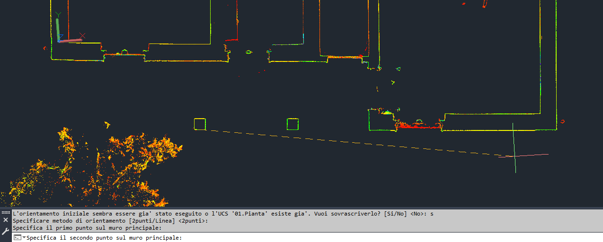
Il metodo a 2 punti: i due quadrati verdi indicano i punti cliccati sul bordo del muro principale. La linea tratteggiata mostra la direzione dell'asse X risultante.
La riga di comando guida l'operatore passo per passo:
- Alla richiesta del metodo, premere Invio per accettare il default [2punti],
oppure digitare
Lper scegliere il metodo Linea. - Cliccare il primo punto sul bordo del muro di riferimento (es. l'angolo sinistro della facciata).
- Cliccare il secondo punto sullo stesso muro (es. l'angolo destro). La distanza non importa, conta solo la direzione.
- Cliccare il punto di Origine del sistema di coordinate (tipicamente un angolo interno o esterno dell'edificio). Questo diventa la coordinata (0,0) del progetto.
- Digitare la quota Z del piano di rilievo (es.
0per il piano terra, oppure la quota altimetrica reale se si lavora in 3D).
Metodo 2 — Linea esistente
Se nel disegno è già presente una linea tracciata sull'asse di un muro (ad es. un segmento di costruzione disegnato manualmente), si può usarla direttamente come riferimento. Questo metodo è utile per riprodurre con esattezza un orientamento già impostato in precedenza.
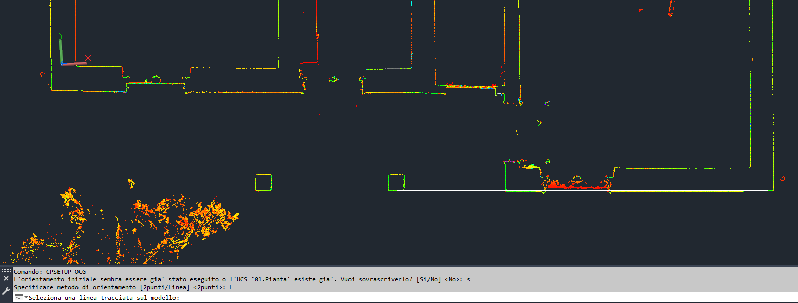
Il metodo Linea: si seleziona una linea già disegnata nel file CAD. AutoCAD mostra il cursore di selezione per puntare direttamente all'elemento.
- Alla richiesta del metodo, digitare
Le premere Invio. - Cliccare sulla linea da usare come riferimento. La direzione va dal punto iniziale (come disegnata originariamente) al punto finale della linea stessa.
- Non appena la linea è selezionata, DraftCP mostra a schermo una freccia verde/gialla che indica la direzione proposta per l'asse X (da sinistra a destra nel rilievo).
- La riga di comando chiede:
[Conferma/Inverti] <Conferma>:- Premere Invio (o digitare
C) per confermare il verso visualizzato dalla freccia. - Digitare
Ie premere Invio per invertire il verso: la "destra" del rilievo diventerà il lato opposto.
- Premere Invio (o digitare
- Cliccare il punto di Origine e digitare la quota Z come nel Metodo 1.
Risultato
Al termine del comando, DraftCP:
- Crea e attiva l'UCS
01.Piantacon gli assi allineati al muro selezionato - Ruota la vista in pianta per mostrare il disegno con il muro principale orizzontale
- Salva le coordinate di origine e la quota Z nei metadati del disegno per l'uso da parte dei comandi successivi
- Registra il completamento dell'orientamento per impedire sovrascritture accidentali future
Video tutorial
Tutorial completo: orientamento del progetto con entrambi i metodi disponibili
Creazione delle Viste CPV
Questo è il comando strutturante dell'intero progetto di rilievo. Crea automaticamente tutte le viste necessarie — piante, sezioni e prospetti — con i relativi layer di disegno, sistemi di riferimento (UCS) e filtri layer, pronti per essere popolati con il disegno del rilievo.
A cosa serve
Prima di tracciare qualsiasi linea, è indispensabile che il disegno abbia una struttura organizzata: un set di layer per ogni vista, un UCS che orienta correttamente l'area di lavoro, e un filtro che isola i layer della vista attiva da tutti gli altri. Il comando CPV crea tutto questo in automatico con pochi clic, risparmiando decine di minuti di configurazione manuale per ogni progetto.
Per le sezioni, il comando inserisce anche il blocco dinamico della linea di sezione
(LineaSezioneDraftCP) sul piano piantimetrico, con l'orientamento e la
lettera corretti, per indicare graficamente dove è stato effettuato il taglio.
01.Pianta
non esiste, il comando non può creare le viste correttamente.
Come avviare il comando
Digitare CPV nella riga di comando oppure cliccare Generazione Viste nella Dashboard. Si apre la finestra di configurazione iniziale:
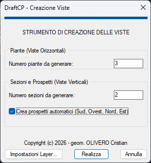
La finestra di configurazione: si impostano il numero di piante, sezioni e se generare i 4 prospetti automatici
La finestra di configurazione
La finestra è divisa in due sezioni:
Piante (Viste Orizzontali)
Inserire il numero di piante da creare nel campo "Numero piante da generare". Ogni pianta corrisponde a un piano dell'edificio (es. 3 = piano terra + primo piano + sottotetto). Per ogni pianta verrà chiesto il nome nella fase successiva.
Sezioni e Prospetti (Viste Verticali)
Inserire il numero di sezioni trasversali nel campo apposito. Per ogni sezione verrà chiesta la direzione di sguardo tramite la bussola interattiva.
La casella "Crea prospetti automatici (Sud, Ovest, Nord, Est)", se selezionata, genera automaticamente i 4 prospetti principali dell'edificio con UCS ortogonali preimpostati, senza richiedere ulteriore input dall'operatore.
Pulsanti aggiuntivi
- Impostazioni Layer… — apre il dialogo di personalizzazione dei layer (vedi sotto)
- Realizza — avvia la creazione delle viste con i parametri inseriti
- Annulla — chiude il comando senza modificare il disegno
Fase 1: Nome delle piante
Dopo aver cliccato Realizza, per ogni pianta da creare appare una piccola finestra che chiede il nome da assegnare alla vista:
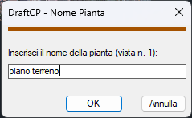
La finestra di inserimento nome pianta: il nome diventa parte del prefisso di tutti i
layer associati (es. 0.4_piano_terreno)
Esempi di nomi tipici: piano_terreno, piano_primo, sottotetto,
seminterrato.
piano_primo invece di Piano Primo). Il nome diventa il
suffisso dei layer: un nome lungo rende i layer difficili da leggere nella palette di AutoCAD.
Fase 2: Direzione delle sezioni (Bussola)
Per ogni sezione da creare, appare la finestra della bussola interattiva che chiede in quale direzione guarda la sezione (ovvero: l'operatore che osserva il disegno della sezione guarda verso quale punto cardinale?).
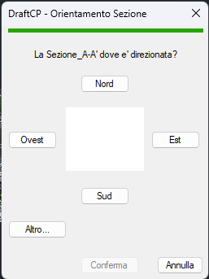
Bussola all'apertura: nessuna direzione ancora selezionata
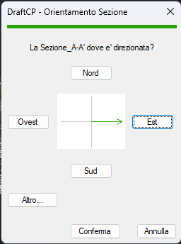
Direzione Est selezionata: la freccia verde indica il verso di sguardo
Cliccare uno dei quattro pulsanti cardinali (Nord, Sud, Est, Ovest) per selezionare la direzione. Cliccando il pulsante, la freccia verde nella bussola si orienta nella direzione scelta e il pulsante Conferma diventa attivo.
Opzione "Altro…" — sezione con orientamento personalizzato
Per sezioni inclinate o con orientamento non ortogonale rispetto ai punti cardinali, cliccare il pulsante Altro…. Apparirà la X rossa nella bussola a indicare la modalità personalizzata attiva:
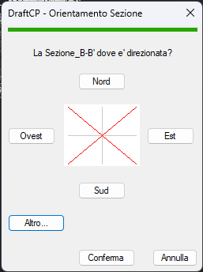
Modalità "Altro": la X rossa indica che la direzione verrà definita graficamente direttamente sul modello
Dopo aver cliccato Conferma con la modalità Altro attiva, AutoCAD chiede di tracciare graficamente la linea di sezione direttamente sul viewport:
- Cliccare il primo punto della linea di sezione sul modello (es. un bordo del muro).
- Cliccare il secondo punto della linea (dall'altra parte del corpo di fabbrica). La linea verde appare in anteprima sul viewport.
- Il sistema chiede di confermare la direzione di vista con S (Sì), N (No — inverte il verso) oppure I (Inverti). Verificare che la freccia gialla punti nella direzione corretta di osservazione.
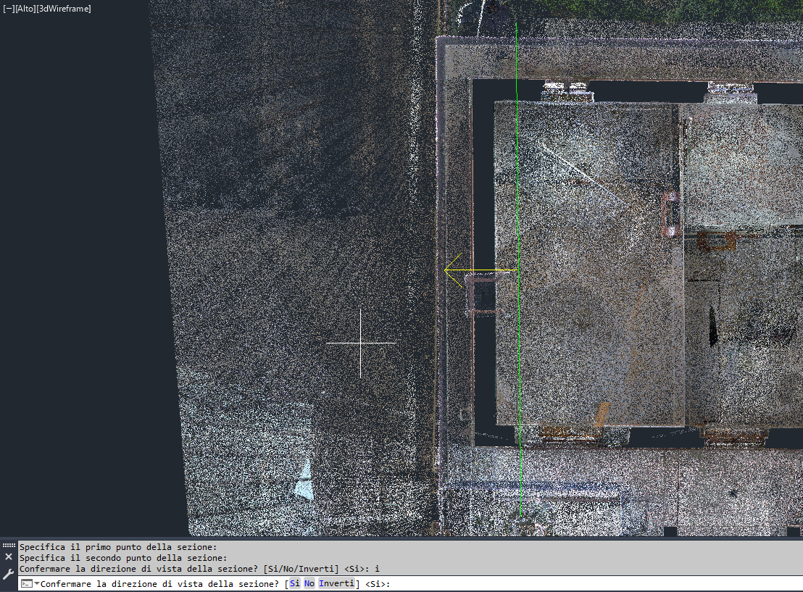
Prima direzione di vista proposta: la freccia gialla indica il verso in cui guarda l'operatore nella sezione. Rispondere S per confermare o I per invertire.
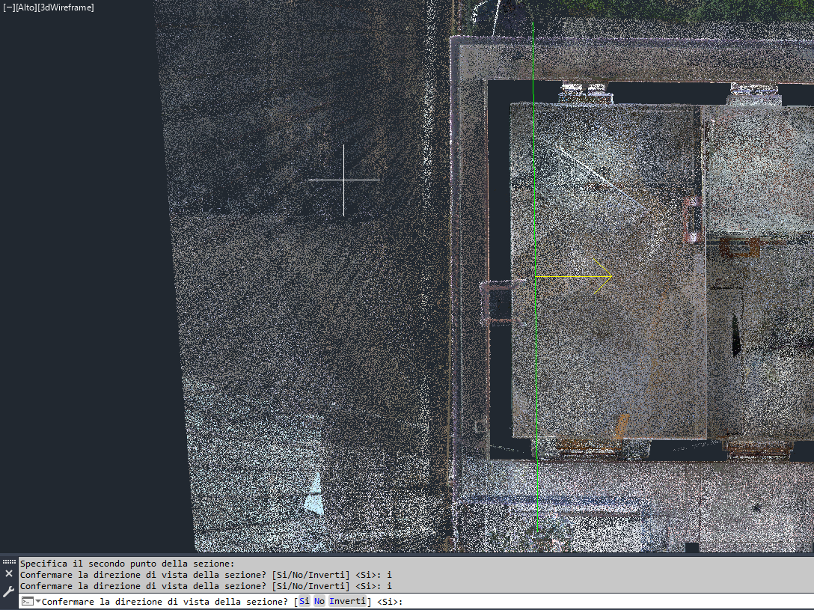
Direzione invertita dopo aver risposto I: la freccia gialla ora punta nella direzione opposta. Rispondere S per confermare questa direzione.
Personalizzazione dei layer (opzionale)
Prima di cliccare Realizza, è possibile aprire il dialogo Impostazioni Layer… per personalizzare i layer che verranno creati per ogni vista:
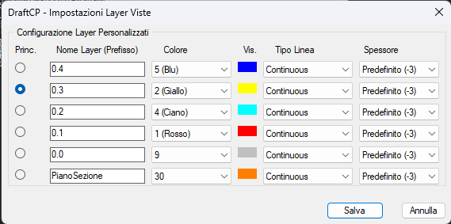
Il dialogo di personalizzazione: prefisso, colore, tipo linea e spessore per ciascun layer. Il radio button a sinistra indica il layer principale (Princ.) usato di default.
Per ogni layer della lista è possibile modificare:
| Colonna | Descrizione | Valore di default |
|---|---|---|
| Princ. | Il layer principale attivo all'apertura della vista | 0.3 (Giallo) |
| Nome Layer (Prefisso) | Il prefisso del layer (seguito automaticamente da _NomeVista) |
0.4, 0.3, 0.2, 0.1, 0.0, PianoSezione |
| Colore | Colore ACI del layer nel disegno | 5=Blu, 2=Giallo, 4=Ciano, 1=Rosso, 9=Grigio, 30=Arancione |
| Tipo Linea | Tipo di linea associato | Continuous per tutti |
| Spessore | Spessore di stampa (mm) | Predefinito (-3) per tutti |
Cosa viene creato nel disegno
Al termine del comando, per ogni vista creata sono presenti nel disegno:
- Layer di disegno con il suffisso del nome vista (es.
0.4_piano_terreno) - Vista AutoCAD con l'area e il fattore di zoom memorizzati
- UCS associato (es.
01.Piantaper le piante,02.Sezione_A-A'per le sezioni) - Filtro gruppo layer che isola i layer di quella vista durante la navigazione
- Blocco linea di sezione sulla pianta (solo per le sezioni), con lettera e orientamento corretti
prefisso_nomeVista
(es. 0.4_piano_terreno, 0.3_sezione_A-A').
Nell'esportazione finale con CPE, questi suffissi vengono
rimossi automaticamente per produrre un file DWG con layer puliti e generici.
Video tutorial
Tutorial completo: creazione di piante, sezioni ortogonali e sezione con orientamento personalizzato (opzione "Altro")
Navigazione tra le Viste AC
Il comando più usato dell'intera sessione di lavoro. Passa istantaneamente da una vista all'altra attivando il corrispondente UCS e isolando automaticamente i layer di quella vista in una frazione di secondo.
A cosa serve
Durante la restituzione grafica si lavora costantemente su viste diverse: si traccia un muro sulla pianta, si controlla l'allineamento sulla sezione, si verifica la quota sul prospetto. Senza un comando dedicato, ogni cambio di vista richiederebbe di attivare manualmente l'UCS, aggiornare i filtri layer e reimpostare la visualizzazione: una sequenza da tre o quattro passi che si ripete centinaia di volte per progetto.
Il comando AC esegue tutto questo in una sola mossa: attiva l'UCS della vista selezionata, isola i suoi layer e porta il disegno nella visualizzazione corretta.
Come funziona
Digitare AC e premere Invio. Nella riga di comando appare la lista numerata di tutte le viste disponibili nel disegno:
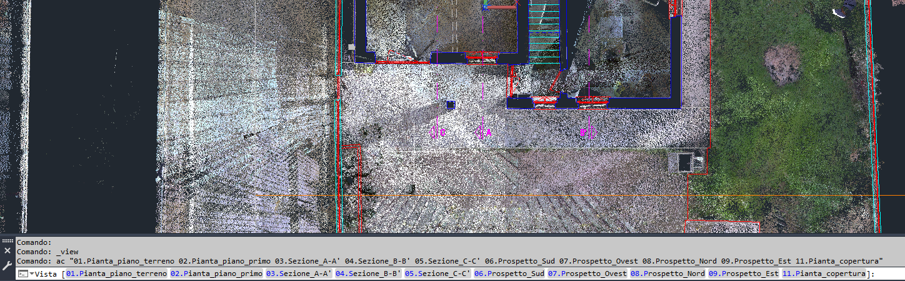
La lista delle viste nella riga di comando. Il sistema mostra tutte le viste con il loro numero progressivo; basta digitare il numero desiderato e premere Invio.
Il sistema mostra tutte le viste nel formato NN.NomeVista
(es. 01.Pianta_piano_terreno, 03.Sezione_A-A',
06.Prospetto_Sud). Digitare il numero della vista e premere
Invio: il disegno si sposta nella vista selezionata in un istante.
Flusso operativo
- Digitare AC e premere Invio oppure Spazio.
- Leggere la lista delle viste visualizzata nella riga di comando.
- Digitare il numero della vista desiderata (es.
3per la Sezione_A-A'). - Premere Invio oppure Spazio: AutoCAD attiva la vista, l'UCS e il filtro layer corrispondenti.
Video tutorial
Tutorial: navigazione rapida tra viste diverse durante una sessione di disegno reale
Tracciamento Muri CPM
Guida nel disegno dei muri a due linee correggendo automaticamente le imprecisioni della nuvola di punti, garantendo parallelismo tra le facce, allineamento agli assi del progetto e arrotondamento dello spessore. Include la chiusura automatica dei giunti con i muri vicini.
A cosa serve
La nuvola di punti restituisce la geometria reale dell'edificio, che per definizione non è mai perfettamente retta: i muri hanno piccole irregolarità, la scansione introduce rumore, e le pareti non sono mai esattamente ortogonali al decimo di millimetro. Disegnare le linee di un muro semplicemente seguendo i punti della nuvola produce un risultato che graficamente sembra corretto ma non lo è: le facce non sono parallele, i muri non chiudono agli angoli, gli spessori variano millimetro per millimetro.
Il comando CPM corregge tutte queste imprecisioni automaticamente: l'operatore clicca quattro punti approssimativi sul muro (due per faccia) e il comando calcola le linee ottimali rispettando le tolleranze configurate, chiudendo poi automaticamente i giunti con i muri già disegnati nelle vicinanze.
Risultato: prima e dopo
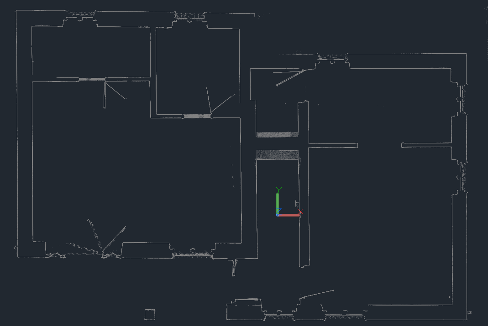
La pianta prima del tracciamento: solo la nuvola di punti, con la geometria dell'edificio visibile ma non ancora tracciata in CAD. L'icona UCS al centro indica che l'orientamento è già stato impostato con CPS.
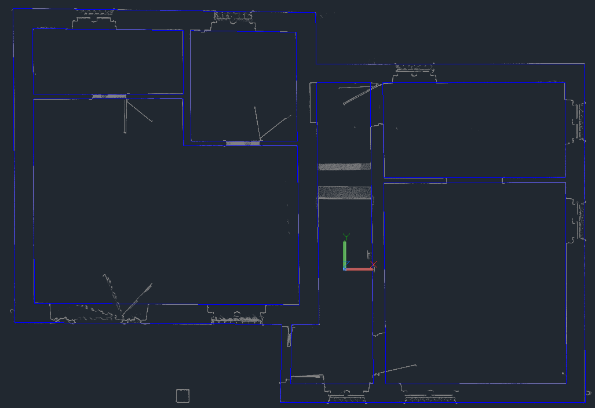
La pianta dopo il tracciamento: le linee blu (layer 0.4) tracciano con precisione tutte le pareti dell'edificio, con giunti chiusi agli angoli e agli innesti. Il tracciamento completo di questa pianta ha richiesto meno di cinque minuti.
Come avviare il comando
Digitare CPM oppure cliccare Tracciamento Muri nella Dashboard. Il comando si avvia e mostra nella riga di comando un prompt con le tolleranze correnti:
Specifica il 1° punto della faccia 1 [Tolleranza/Uscita] <D=1.0 cm, A=1.5°, S=0.05 cm>:
D = Tolleranza Distanza · A = Tolleranza Angolare · S = Arrotondamento Spessore
Il sistema di tolleranze
Il sistema di rettifica usa tre parametri per decidere come correggere la geometria del muro rispetto ai punti cliccati:
| Parametro | Descrizione | Valore tipico |
|---|---|---|
| Tolleranza Distanza | Massimo spostamento consentito (perpendicolare al muro) tra il punto cliccato e la linea rettificata. Se il punto cade più lontano, la rettifica non viene applicata. | 1–2 cm |
| Tolleranza Angolare | Massimo scostamento angolare consentito rispetto all'asse più vicino dell'UCS. Fondamentale per i tratti corti dove la tolleranza lineare non è sufficiente. | 1.5°–3° |
| Arrotondamento Spessore | Arrotonda lo spessore del muro al multiplo più vicino di questo valore (es. 0.05 cm = arrotonda al mezzo millimetro). Impostare 0 per disabilitare. | 0.05 cm |
La Soglia di Switch lineare/angolare
Il comando applica un meccanismo intelligente di selezione della tolleranza: sotto una certa lunghezza del muro, usa la tolleranza angolare (più adatta ai tratti corti dove un piccolo errore angolare produce grande errore lineare); sopra quella lunghezza, usa la tolleranza lineare.
Questa soglia viene calcolata automaticamente con la formula:
L = (2 × TolleranzaDistanza) / sin(TolleranzaAngolare)
Il valore calcolato è mostrato in tempo reale nella finestra di impostazione parametri (campo "Soglia Corrente di Cambio Tolleranza") e si aggiorna ogni volta che si modifica uno dei due parametri.
Configurazione dei parametri
Prima di cliccare il primo punto, digitare T per aprire la finestra di impostazione dei parametri:
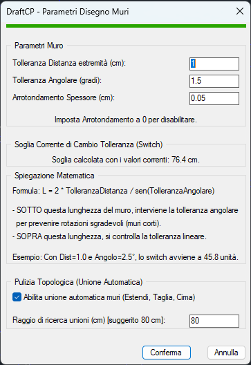
La finestra di configurazione: tolleranza distanza, tolleranza angolare, arrotondamento spessore, la soglia di switch calcolata in tempo reale, e le opzioni per l'unione automatica dei giunti.
I parametri vengono salvati automaticamente nel Registro di Windows e sono mantenuti tra una sessione e l'altra.
Le tre regole di rettifica (in ordine di priorità)
Quando vengono verificati più candidati geometrici per la posizione finale del muro, il sistema li valuta in questo ordine di priorità:
Flusso operativo: i quattro punti
Il comando acquisisce quattro punti e li analizza per identificare autonomamente le due facce del muro. L'ordine di click è completamente libero: l'algoritmo valuta tutte le possibili combinazioni e individua i due lati più lunghi del quadrilatero, che corrispondono alle due facce parallele del muro. Non importa in quale sequenza si clicchino i quattro punti.
- Digitare CPM o cliccare Tracciamento Muri nella Dashboard. (Opzionale: digitare T per aprire i parametri prima di procedere.)
- Cliccare un primo punto su uno dei due bordi del muro sulla nuvola.
- Cliccare un secondo punto — può essere sull'altro bordo o sullo stesso, l'ordine non cambia il risultato.
- Cliccare un terzo punto su uno dei bordi del muro.
- Cliccare il quarto punto per completare la selezione. I quattro punti definiscono un quadrilatero; il comando identifica i due lati più lunghi come le due facce del muro.
- Il sistema disegna due linee verdi provvisorie e chiede conferma: [Si/Ridisegna/Annulla]. Premere Invio (o Spazio) per confermare.
- Il comando calcola la geometria rettificata, disegna le due linee definitive sul layer attivo e chiude automaticamente i giunti con i muri vicini.
- Il prompt riparte dal passo 2 per tracciare il muro successivo. Premere Esc per terminare il comando.
Unione automatica dei giunti
Se "Abilita unione automatica muri" è attivo nei parametri, al termine di ogni tratto il comando cerca automaticamente muri già disegnati entro il raggio di ricerca configurato (es. 80 cm) e gestisce la chiusura geometrica del giunto:
| Tipo giunto | Come viene chiuso |
|---|---|
| Giunto a L (angolo) | Le estremità del muro nuovo e del muro vicino vengono estese o tagliate fino al punto di intersezione, formando un angolo pulito senza sovrapposizioni né lacune. |
| Giunto a T (innesto) | Il muro intermedio viene allungato o accorciato fino alla superficie del muro principale, e il muro principale viene spezzato nel punto di innesto creando un giunto a T pulito. |
0.4_01.Pianta_piano_terreno) dalla palette layer di AutoCAD.
Video tutorial
Tutorial completo: tracciamento di tutti i muri di una pianta reale in meno di cinque minuti, con giunti a L e T chiusi automaticamente
Inserimento Finestre CPF
Inserisce finestre nei muri già tracciati con tre click: due sull'apertura (lato esterno) e uno sulla linea interna del muro. Genera il taglio del muro e disegna automaticamente la geometria completa del serramento — in modalità semplice o complessa con tutti i dettagli costruttivi.
A cosa serve
Dopo aver tracciato i muri con CPM, il passo successivo è inserire le aperture. Il comando CPF esegue questa operazione in modo preciso e parametrico: rileva automaticamente lo spessore del muro dai click dell'operatore, spezza le due linee del muro nell'apertura con il comando Break e disegna la rappresentazione 2D della finestra sul layer serramento corretto.
Le due modalità: Semplice e Complessa
La finestra di dialogo presenta un selettore Semplice / Complessa in alto a destra che cambia la quantità di parametri e di dettagli grafici generati.
Modalità Semplice
Genera una rappresentazione essenziale: le linee di spessore del serramento e la mazzetta (profondità di arretramento). Ideale per una prima restituzione rapida o per finestre standard dove i dettagli costruttivi non sono necessari.
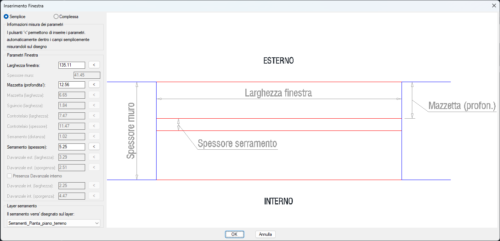
Modalità Semplice: i parametri principali (larghezza, mazzetta, serramento) e l'anteprima grafica aggiornata in tempo reale. Lo spessore muro viene rilevato automaticamente dai click.
Modalità Complessa
Genera la rappresentazione completa con tutti i componenti costruttivi: mazzetta, sguincio, controtelaio, serramento, davanzale esterno e davanzale interno (opzionale). Adatta alla restituzione definitiva da consegnare.
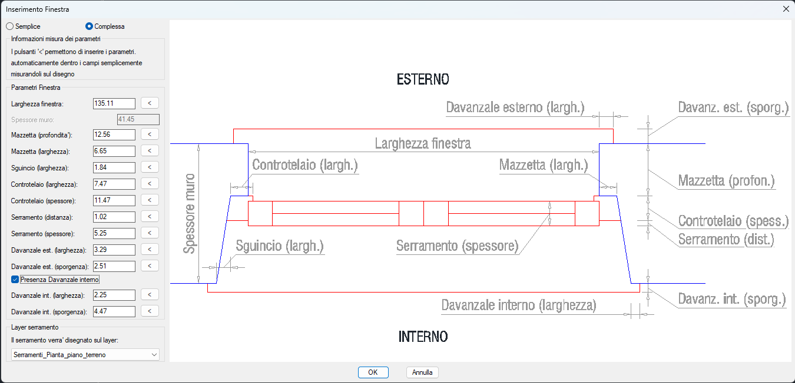
Modalità Complessa: tutti i componenti costruttivi sono configurabili e quotati sull'anteprima. La casella "Presenza Davanzale interno" abilita i campi del davanzale interno.
Il pulsante < — Misurazione sul disegno
Ogni campo numerico ha un pulsante < a fianco. Cliccandolo, la finestra si minimizza temporaneamente e il cursore torna sul disegno: è possibile misurare il valore direttamente sulla nuvola di punti con due click (es. larghezza reale del serramento, profondità della mazzetta). Il valore misurato viene inserito automaticamente nel campo corrispondente e la finestra si riapre.
Flusso operativo: i tre click
Il comando non apre subito la finestra di dialogo: acquisisce prima i tre punti che definiscono geometria e orientamento della finestra, poi presenta i parametri con i valori già calcolati (larghezza rilevata, spessore muro rilevato).
- Digitare CPF o cliccare Inserimento Finestre nella Dashboard.
- La riga di comando chiede:
Vuoi verificare o modificare i parametri prima di iniziare? [Si/No] <No>:- Premere Invio per rispondere No e procedere direttamente (scelta consigliata per gli operatori esperti che hanno già configurato i parametri).
- Digitare
Sper aprire subito la finestra parametri e impostare spessore serramento, mazzetta, ecc. prima ancora di cliccare sul muro.
- Cliccare il primo punto della larghezza (lato esterno del muro): posizionarsi su un bordo dell'apertura, sulla linea esterna del muro. Il click identifica anche la linea esterna del muro e ne rileva il layer.
- Cliccare il secondo punto della larghezza (sempre sul lato esterno): l'altro bordo dell'apertura sulla stessa linea. La distanza tra i due click diventa la larghezza della finestra.
- Cliccare un punto sulla linea interna del muro: questo terzo click determina lo spessore del muro (distanza tra lato esterno e lato interno) e il verso di inserimento (da quale lato è l'interno).
- La riga di comando chiede se reimpostare i parametri. Rispondere Si per aprire la finestra di configurazione oppure No per disegnare immediatamente con i valori correnti.
- Il comando taglia le due linee del muro nell'apertura e disegna la geometria della finestra sul layer selezionato.
Risultato
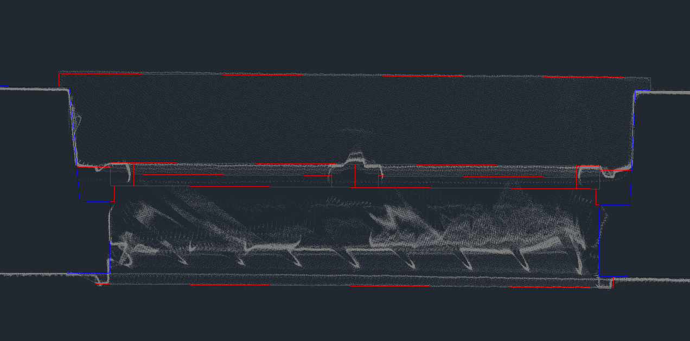
Risultato di un inserimento in modalità Complessa: le linee rosse rappresentano il serramento (layer Serramenti), le linee blu il muro (layer 0.4). Il taglio del muro e tutte le componenti costruttive sono stati generati automaticamente.
Video tutorial
Tutorial: inserimento di una finestra complessa con misurazione dei parametri direttamente sulla nuvola di punti
Inserimento Porte CPP
Inserisce porte interne nei muri tracciati con due click. Taglia il muro nell'apertura, disegna le linee di chiusura laterali e posiziona opzionalmente il blocco dinamico della porta, adattandolo automaticamente alla larghezza e allo spessore rilevati.
A cosa serve
Analogamente a CPF per le finestre, il comando CPP gestisce l'inserimento delle aperture di porta all'interno dei muri già disegnati. La differenza fondamentale è la presenza del blocco dinamico parametrico che rappresenta l'anta della porta con il suo arco di apertura.
La finestra di configurazione
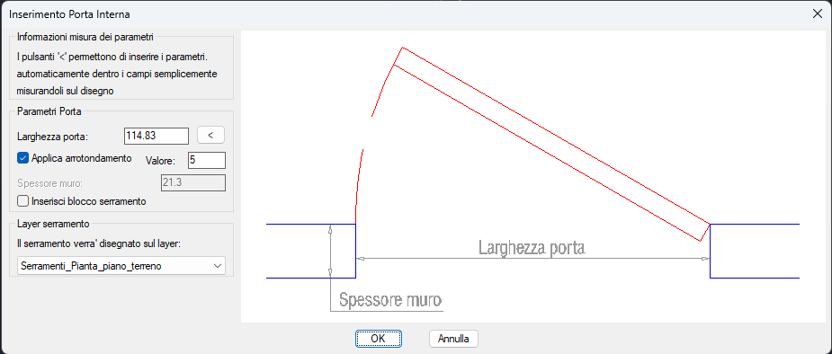
La finestra di configurazione porta: larghezza (rilevata automaticamente dai click), arrotondamento opzionale, spessore muro (rilevato automaticamente) e scelta del layer serramento.
I parametri disponibili sono:
- Larghezza porta: rilevata automaticamente dalla distanza tra il primo e il secondo click. Modificabile manualmente. Il pulsante < permette di rimisurare sul disegno.
- Applica arrotondamento: se attivo, arrotonda la larghezza al multiplo del valore specificato (es. 5 cm). Utile per standardizzare le misure dei vani porta.
- Spessore muro: rilevato automaticamente. Campo di sola lettura.
- Inserisci blocco serramento: se attivo, dopo il taglio del muro viene inserito il blocco dinamico della porta posizionato e dimensionato automaticamente.
- Layer serramento: layer di destinazione per il blocco porta e le linee di chiusura.
Il blocco dinamico della porta
Se l'opzione "Inserisci blocco serramento" è attiva, il comando
inserisce automaticamente il blocco PortaInterna_CpPorte_OCG,
che include l'anta e lo spigolo di apertura. Il blocco viene:
- Posizionato esattamente sull'apertura, allineato al muro
- Scalato alla larghezza dell'apertura rilevata
- Adattato allo spessore del muro
Una volta inserito, il blocco è un blocco dinamico parametrico: selezionandolo appaiono i grip blu che permettono di modificare interattivamente il senso di apertura (destra/sinistra, interno/esterno) semplicemente cliccando le frecce di controllo, senza rieseguire il comando.
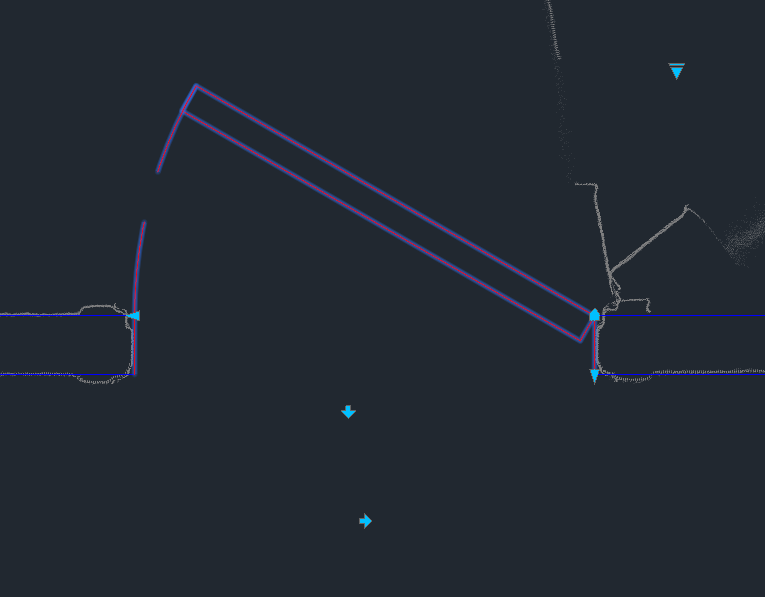
Il blocco dinamico della porta inserito nel muro. I grip blu (frecce triangolari) permettono di modificare il senso di apertura con un semplice click, senza rieseguire il comando.
Flusso operativo: due click
A differenza di CPF, il comando CPP richiede soltanto due click all'interno del muro. Il comando rileva automaticamente le linee del muro più vicine a ciascun click, calcola lo spessore del muro, determina l'orientamento e il verso dell'apertura. Tutto il resto — taglio, chiusura laterale, inserimento del blocco — avviene senza ulteriori interventi dell'operatore.
- Digitare CPP o cliccare Inserimento Porte nella Dashboard.
- Cliccare il primo punto all'interno del muro, in corrispondenza di un bordo dell'apertura.
- Cliccare il secondo punto all'interno del muro, in corrispondenza dell'altro bordo dell'apertura. La distanza tra i due click definisce la larghezza del vano porta.
- Se lo si desidera, aprire la finestra di configurazione. Impostare i parametri (larghezza, arrotondamento, layer) e cliccare OK.
- Il comando rileva automaticamente le linee del muro, calcola lo spessore, taglia le linee del muro nell'apertura, disegna le linee di chiusura laterali e inserisce il blocco porta (se l'opzione è attiva).
Video tutorial
Tutorial: inserimento di porte interne con il blocco dinamico e modifica del senso di apertura tramite grip
Blocchi di Controllo CPB
Copia il disegno di una vista su una vista di destinazione diversa, ruotandolo geometricamente nell'orientamento corretto. Strumento fondamentale per verificare l'allineamento verticale tra piante, sezioni e prospetti durante il lavoro.
A cosa serve
Nel rilievo architettonico, piante e sezioni devono essere geometricamente coerenti: un muro in pianta deve corrispondere esattamente alla parete nella sezione, e la quota del davanzale in sezione deve coincidere con il bordo della finestra in pianta. Verificare questa coerenza richiede di confrontare oggetti che si trovano su viste diverse, orientate in direzioni diverse.
Il comando CPB risolve questo problema creando un blocco di controllo: una copia di tutti gli oggetti della vista di partenza, riposizionata nella vista di destinazione con la rotazione geometrica corretta. Il blocco è inserito nella vista target come elemento sovrapposto: se linee e spigoli del blocco coincidono con il disegno della vista target, l'allineamento è corretto. Se ci sono scostamenti, si individua immediatamente dove e di quanto.
Nome e aggiornamento del blocco
Ogni blocco di controllo viene nominato automaticamente con il formato:
DraftCP_Ctrl_NomePartenza-NomeDestinazione
(es. DraftCP_Ctrl_01.Pianta_piano_terreno-03.Sezione_A-A').
Il nome è univoco per ogni coppia di viste.
Se il blocco per quella coppia esiste già nel disegno (perché il comando era stato eseguito in precedenza), richiamare CPB con le stesse viste aggiorna automaticamente il blocco con le modifiche apportate nel frattempo alla vista di partenza. Non occorre eliminare il vecchio blocco prima di rieseguire.
Cosa viene copiato e cosa no
| Tipo di oggetto | Incluso nel blocco? |
|---|---|
| Linee, polilinee, archi | ✅ Sì |
| Testi e quote | ✅ Sì |
| Blocchi di porte e finestre | ✅ Sì |
Linee di sezione (LineaSezioneDraftCP) |
✅ Sì |
| Blocchi di controllo già esistenti | ❌ No (evita nidificazione) |
| Nuvola di punti | ❌ No |
| Viewport | ❌ No |
I layer degli oggetti all'interno del blocco vengono automaticamente convertiti
dal suffisso della vista di partenza a quello della vista di destinazione.
Ad esempio, un oggetto su 0.4_01.Pianta_piano_terreno diventa
0.4_03.Sezione_A-A' nel blocco di controllo inserito sulla sezione.
Questo fa sì che il blocco rispetti la visibilità e i colori della vista di destinazione.
Come avviare il comando
Digitare CPB oppure cliccare Blocchi di Controllo nella Dashboard. Si apre la finestra di configurazione:
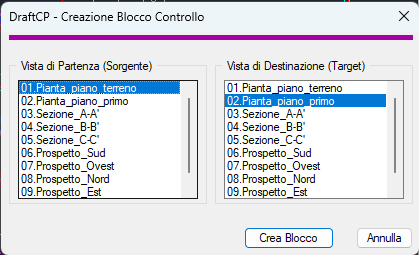
La finestra con le due liste: a sinistra la Vista di Partenza (sorgente), a destra la Vista di Destinazione (target). Nell'esempio, la pianta del piano terreno verrà copiata sulla pianta del piano primo.
Flusso operativo
- Digitare CPB o cliccare Blocchi di Controllo nella Dashboard.
- Nella lista di sinistra (Vista di Partenza), selezionare la vista da copiare.
- Nella lista di destra (Vista di Destinazione), selezionare la vista su cui incollare il blocco.
- Cliccare "Crea Blocco".
- Il blocco viene creato, inserito nella vista di destinazione con la rotazione geometrica corretta e quella vista viene resa corrente automaticamente.
Video tutorial
Tutorial: creazione di un blocco di controllo dalla pianta verso la sezione, con verifica dell'allineamento geometrico
Eliminazione Viste DELV
Rimuove una vista dal progetto in modo sicuro e completo, eliminando tutti gli oggetti ad essa associati, i layer, l'UCS e il blocco linea di sezione. Le viste rimanenti vengono rinumerate automaticamente per mantenere la sequenza coerente.
A cosa serve
Eliminare manualmente una vista da AutoCAD richiederebbe di cancellare a mano decine di layer, l'UCS, il filtro gruppo e tutti gli oggetti grafici — con il rischio di lasciare residui che compromettono il funzionamento dei comandi successivi. Il comando DELV esegue questa pulizia in modo atomico e verificato.
Cosa viene eseguito automaticamente:
-
Gli oggetti grafici nei layer della vista vengono spostati
in una definizione di blocco denominata
ViewDelete_yymoddhhmmss_NomeVista(es.ViewDelete_260701143022_Sezione_A-A'). Il blocco è sempre accessibile dall'Editor di Blocchi di AutoCAD e conserva tutto il disegno della vista eliminata a scopo di recupero o consultazione. -
I layer della vista vengono rinominati togliendo
il suffisso del nome (es.
0.4_Sezione_A-A'diventa0.4). Non vengono eliminati: i layer "puliti" restano disponibili nel disegno. - Il filtro gruppo layer associato alla vista viene rimosso.
- L'UCS associato (es.
03.Sezione_A-A') viene eliminato. - Il blocco linea di sezione sulla pianta (se presente) viene eliminato.
- La voce nella tabella viste di AutoCAD viene eliminata.
03.Sezione_A-A', la vecchia 04.Sezione_B-B' diventa
03.Sezione_B-B' e così via.
ViewDelete_… all'interno del file DWG.
Per visualizzarli, aprire il comando Editor di Blocchi
(BEDIT) e selezionare il blocco corrispondente dalla lista.
Il blocco rimane nel disegno fino alla prossima esportazione finale con
CPE (o fino a quando non viene eliminato manualmente).
Come avviare il comando
Digitare DELV oppure cliccare Eliminazione Viste nella Dashboard. Si apre la finestra di selezione:
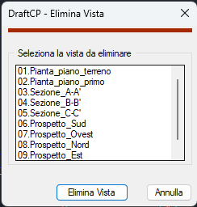
La finestra di selezione mostra tutte le viste presenti nel progetto. Selezionare quella da eliminare e cliccare "Elimina Vista".
Flusso operativo
- Digitare DELV o cliccare Eliminazione Viste nella Dashboard.
- Selezionare dalla lista la vista da eliminare (un click sul nome la evidenzia).
- Cliccare il pulsante "Elimina Vista".
- Nella finestra di conferma, cliccare "Sì" per procedere oppure "No" per annullare.
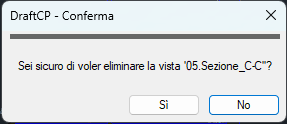
La finestra di conferma: il nome della vista viene mostrato nel messaggio per evitare eliminazioni accidentali.
Video tutorial
Tutorial: eliminazione di una vista con rinumerazione automatica delle viste rimanenti
Visibilità Nuvola di Punti B
Accende e spegne istantaneamente la nuvola di punti con un solo tasto. Il comando più rapido dell'applicazione: nessuna finestra, nessuna selezione, nessuna conferma richiesta.
A cosa serve
La nuvola di punti è l'elemento di riferimento fondamentale per il rilievo, ma la sua presenza rallenta la visualizzazione grafica e può rendere difficile leggere il disegno in avanzamento. È prassi comune alternarla continuamente: accesa per tracciare, spenta per verificare il disegno.
Oltre ad accendere/spegnere la visibilità, il comando svolge una seconda
funzione di verifica: controlla che la nuvola di punti sia assegnata al
layer corretto (CloudWorx Use (Do not change)). Se non lo è,
la sposta automaticamente sul layer giusto. Questo è pensato in particolare
per chi lavora con il plugin Leica CloudWorx, dove può
capitare inavvertitamente di spostare la nuvola su un layer sbagliato.
Come funziona
Digitare B e premere Invio (o Spazio). Il comando si esegue immediatamente: se la nuvola era visibile la spegne, se era spenta la riaccende.
La riga di comando mostra un messaggio che conferma l'operazione eseguita.
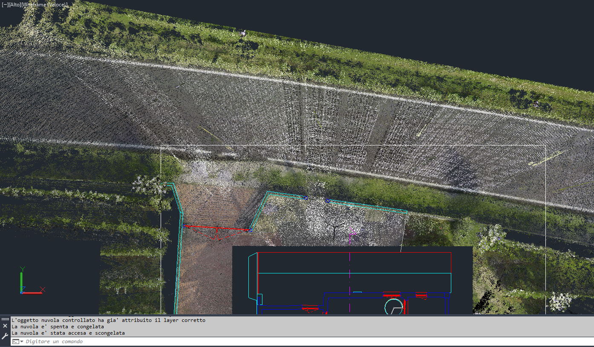
Nuvola di punti visibile: i punti colorati mostrano la geometria dell'edificio rilevato, usata come riferimento per il tracciamento
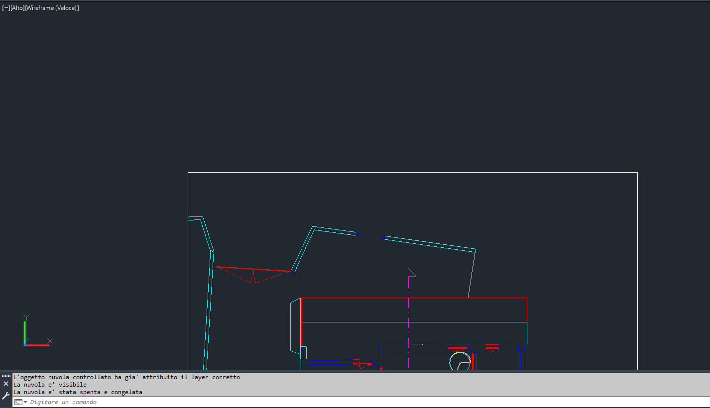
Nuvola spenta: il disegno CAD è perfettamente leggibile senza la sovrapposizione dei punti. La riga di comando conferma: "La nuvola è stata spenta e congelata"
Messaggi della riga di comando
| Messaggio | Significato |
|---|---|
L'oggetto nuvola controllato ha già attribuito il layer corretto |
La nuvola era già sul layer giusto, nessuna correzione necessaria. |
La nuvola è visibile |
Stato iniziale rilevato: la nuvola era accesa prima dell'esecuzione del comando. |
La nuvola è stata spenta e congelata |
La nuvola è ora invisibile. Il layer è stato congelato per massimizzare le prestazioni grafiche. |
La nuvola è stata accesa e scongelata |
La nuvola è ora nuovamente visibile. |
La nuvola è stata spostata sul layer corretto |
La nuvola era su un layer errato: è stata corretta automaticamente. |
Nessuna nuvola di punti trovata nel disegno |
Non è presente alcuna nuvola di punti nel file DWG aperto. |
.rcp / .rcs)
e con il plugin Leica CloudWorx. Se si utilizza un altro
metodo di importazione, il layer di riferimento potrebbe essere diverso.
Esportazione Finale CPE
Raccoglie automaticamente tutti gli oggetti di tutte le viste, li dispone in un layout bidimensionale ordinato su una "tavola virtuale" e li salva in un nuovo file DWG pulito, pronto per la consegna. Il disegno originale rimane intatto.
A cosa serve
Il file DWG di lavoro usato durante il rilievo ha una struttura complessa: decine di layer con suffissi di vista, UCS multipli, blocchi di controllo, la nuvola di punti collegata. Non è un elaborato consegnabile al committente. Il comando CPE estrae da questo file solo gli oggetti utili, li riorganizza in una tavola standard e genera un file DWG separato, con layer puliti e generici, adatto alla consegna.
Il file originale non viene mai modificato: l'esportazione lavora interamente
in memoria (protetta da un blocco UNDO) e salva il risultato con
_WBLOCK in un nuovo file. Al termine, il disegno corrente viene
ripristinato automaticamente tramite UNDO.
Come avviare il comando
Digitare CPE oppure cliccare Esportazione Finale nella Dashboard. Il comando non apre finestre di dialogo: inizia immediatamente l'elaborazione e notifica il progresso nella riga di comando.
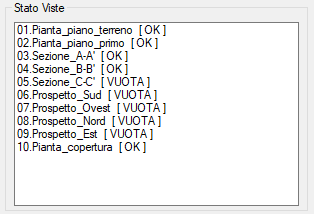
Il box Stato Viste nella Dashboard prima dell'esportazione: le viste con [ OK ] saranno incluse, quelle con [ VUOTA ] escluse.
Il layout di esportazione
Gli oggetti delle viste vengono disposti su una tavola virtuale bidimensionale in due righe:
- Riga superiore — Piante (viste orizzontali): disposte affiancate orizzontalmente con una distanza di 20 metri tra l'una e l'altra, nell'ordine numerico originale.
- Riga inferiore — Sezioni e Prospetti (viste verticali): disposte anch'esse affiancate con una distanza di 10 metri tra ciascuna, a 30 metri sotto la riga delle piante.
Su ogni vista esportata vengono aggiunti automaticamente:
- Un testo con il nome della vista posizionato in alto a sinistra
- Un punto sull'origine degli assi (layer
Riferimenti, colore 40) per facilitare il posizionamento in altri disegni
L'intera composizione è racchiusa in un cartiglio rettangolare
(layer Cartiglio) con il nome del file DWG originale come etichetta.
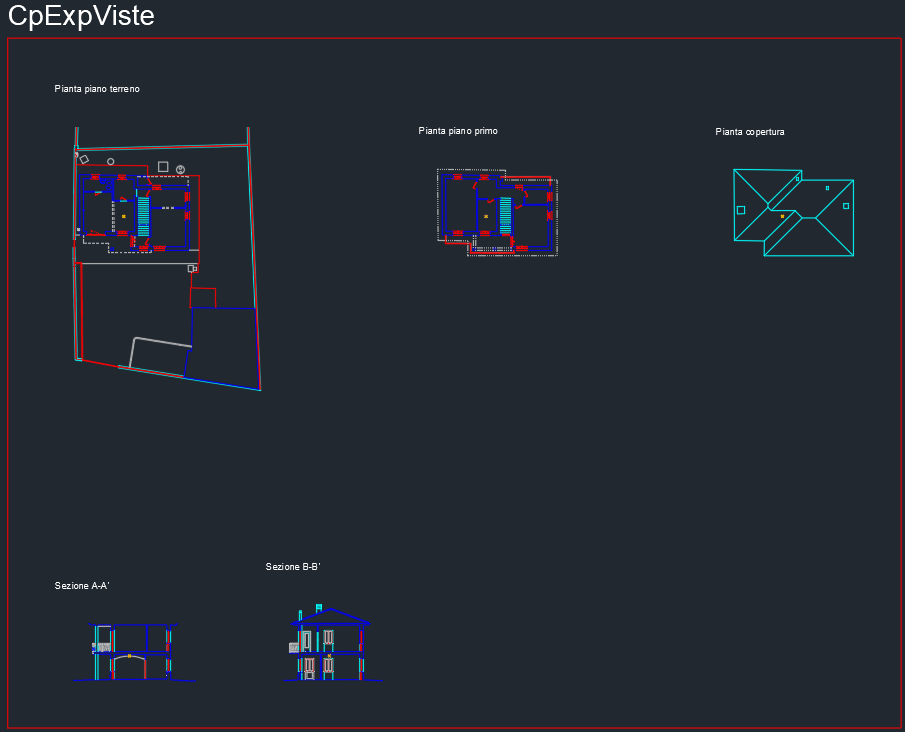
Il risultato dell'esportazione: 3 piante nella riga superiore e 2 sezioni in quella inferiore, ciascuna con il nome in alto a sinistra. Il rettangolo rosso è il cartiglio che delimita la tavola.
Pulizia e unificazione dei layer
Nel file esportato, i layer vengono rinominati togliendo il suffisso della vista:
0.4_01.Pianta_piano_terreno diventa semplicemente 0.4,
0.3_03.Sezione_A-A' diventa 0.3, e così via.
Il risultato è un disegno con layer standard e puliti, indipendente dalla struttura
interna del file di lavoro.
Gli oggetti che non appartengono alle viste — blocchi di controllo (DraftCP_Ctrl_…),
la nuvola di punti, e i blocchi delle viste eliminate (ViewDelete_…)
— vengono automaticamente esclusi dall'esportazione.
Nome e percorso del file esportato
Il file viene salvato nella stessa cartella del disegno originale con il nome nel formato:
NomeFileOriginale_exp_YYMODDHHMMSS.dwg
Il timestamp garantisce che ogni esportazione generi un file con nome univoco,
senza sovrascrivere le versioni precedenti. Ad esempio:
RilievoVilla_exp_260702140530.dwg
Video tutorial
Tutorial: esportazione finale di un progetto con 3 piante e 2 sezioni nel file DWG consegnabile
Domande Frequenti e Risoluzione Problemi
Raccolta delle domande più comuni e dei problemi riscontrati durante l'uso di DraftCP, con le relative soluzioni.
Problemi di avvio e licenza
Il comando CPD non viene riconosciuto da AutoCAD
Verificare di aver installato correttamente il plugin. Provare a riavviare AutoCAD e se il problema persiste contattare l'assistenza.
Il messaggio "Licenza non valida" appare all'avvio di un comando
La licenza è legata al codice hardware del computer (MAC address). Cause possibili:
- Il software è stato installato su un computer diverso da quello registrato.
- La scheda madre è stata sostituita.
- La licenza è scaduta.
Contattare il supporto tecnico fornendo il codice macchina mostrato nella finestra di attivazione
Problemi con le viste
CPV non trova l'UCS corretto per la sezione
Il comando CPV usa l'UCS corrente per definire l'orientamento della vista. Prima di creare una sezione, assicurarsi di aver impostato l'UCS della sezione con CPS e di essere in tale UCS quando si lancia CPV.
Dopo DELV le viste non sono rinomerate correttamente
La rinumerazione automatica di DELV aggiorna i nomi dei layer e degli UCS, ma non rinomina retroattivamente i blocchi di controllo già creati con CPB. Eliminare i blocchi di controllo obsoleti manualmente (con il comando BEDIT → elimina definizione) e ricrearli con CPB.
Problemi con il tracciamento dei muri
CPM non rettifica i muri: le linee rimangono come le ho cliccate
La rettifica viene applicata solo se il punto cliccato è entro le tolleranze impostate. Se i punti sono troppo lontani dalle linee rette ortogonali (distanza superiore alla Tolleranza Distanza, oppure angolo superiore alla Tolleranza Angolare), la rettifica fallisce e il muro viene tracciato esattamente sui punti cliccati.
Soluzione: aprire i parametri con T prima di cliccare e aumentare la Tolleranza Distanza o la Tolleranza Angolare.
I giunti automatici di CPM non si chiudono correttamente
L'unione automatica dei giunti cerca linee entro il raggio di ricerca configurato. Se il muro esistente è oltre questo raggio, non viene trovato. Aprire i parametri con T e aumentare il valore di "Raggio di ricerca unioni" (es. da 80 a 150 cm).
Nota: un raggio troppo grande può causare unioni indesiderate con muri lontani. Il valore ottimale dipende dalla scala del progetto.
CPF o CPP non riconoscono le linee del muro al click
I comandi cercano entità di tipo LINE nelle vicinanze del punto cliccato. Possibili cause:
- Il muro è composto da polilinee anziché linee semplici: esplodere le polilinee con ESPLODI prima di usare CPF/CPP.
- Il click è troppo lontano dalla linea del muro: usare gli Osnap attivi (Nearest, On) per agganciare il punto sulla linea.
- Il layer del muro è congelato o disattivato: verificare nella palette layer.
Problemi con l'esportazione
CPE non genera il file o genera un file vuoto
Verificare nella Dashboard (box Stato Viste) che almeno una vista abbia stato [ OK ]. Se tutte le viste mostrano [ VUOTA ], il file esportato non conterrà oggetti.
Controllare anche che il disegno sia salvato nella cartella corretta e che
il percorso non contenga caratteri speciali che potrebbero interferire con
il salvataggio del file _exp_.
Nel file esportato i layer hanno ancora il suffisso della vista
La pulizia dei layer avviene solo sugli oggetti esportati tramite CPE. Se nel file esportato si vedono layer con suffisso, alcuni oggetti erano su layer non gestiti da DraftCP (es. layer creati manualmente senza il suffisso standard). Rinominarli manualmente nel file esportato.
Riferimenti Tecnici
Riepilogo di tutti i comandi, la struttura dei layer, le variabili globali persistenti e i file del pacchetto DraftCP.
Elenco comandi
| Comando | Funzione |
|---|---|
| CPD | Apre la Dashboard principale |
| CPS | Imposta l'UCS della sezione/pianta |
| CPV | Crea una nuova vista (pianta o sezione) |
| AC | Attiva la vista corrente (Navigate) |
| TRLV | Trasla una vista |
| CPM | Traccia muri a due linee dalla nuvola |
| CPF | Inserisce finestre (semplici o complesse) |
| CPP | Inserisce porte interne con blocco dinamico |
| CPB | Crea blocchi di controllo tra viste |
| DELV | Elimina una vista in modo sicuro |
| B | Accende/spegne la nuvola di punti |
| CPE | Esporta tutte le viste in un file DWG pulito |
Struttura dei layer
DraftCP usa una convenzione di nominazione dei layer basata su prefisso di tipo e suffisso di vista:
PrefissoTipo_NumeroVista.NomeVista
| Prefisso | Tipo di oggetto | Esempio |
|---|---|---|
0.0 |
Layer ausiliario / dettagli | 0.0_01.Pianta_piano_terreno |
0.1 |
Serramenti / elementi meno importanti | 0.1_01.Pianta_piano_terreno |
0.2 |
Linee di prospetto | 0.2_01.Pianta_piano_terreno |
0.3 |
Linee ausiliarie / elementi sezionati meno importati | 0.3_01.Pianta_piano_terreno |
0.4 |
Muri sezionati e strutture principali | 0.4_01.Pianta_piano_terreno |
CloudWorx Use |
Nuvola di punti (Leica) | CloudWorx Use (Do not change) |
Riferimenti |
Origini e punti esportazione | Riferimenti |
Cartiglio |
Bordo tavola esportata | Cartiglio |
Variabili globali principali
I parametri configurati dall'utente vengono salvati nel Registro di Windows
sotto la chiave HKCU\Software\DraftCP_OCG e sono mantenuti tra una sessione e l'altra:
| Variabile | Comando | Significato |
|---|---|---|
*TolDist* |
CPM | Tolleranza distanza muri (cm) |
*TolAng* |
CPM | Tolleranza angolare muri (gradi) |
*TolSpessore* |
CPM | Arrotondamento spessore muri (cm) |
*AutoUnione* |
CPM | Unione automatica giunti (T/nil) |
*RaggioUnione* |
CPM | Raggio di ricerca giunti (cm) |
*cpa-fin-tipo* |
CPF | Modalità finestra (semplice/complessa) |
*cpa-fin-larg* |
CPF | Ultima larghezza finestra usata |
*cpa-por-arrotonda* |
CPP | Arrotondamento larghezza porta (T/nil) |
*cpa-por-arrotonda-valore* |
CPP | Valore arrotondamento porta (cm) |
Requisiti di sistema
| Requisito | Valore |
|---|---|
| AutoCAD | 2018 o superiore (con supporto VL/LISP) |
| Sistema operativo | Windows 10 / 11 (64 bit) |
| Nuvola di punti | Autodesk ReCap (.rcp/.rcs) o Leica CloudWorx |
| Unità di misura | metriche (il software si adatta automaticamente) |